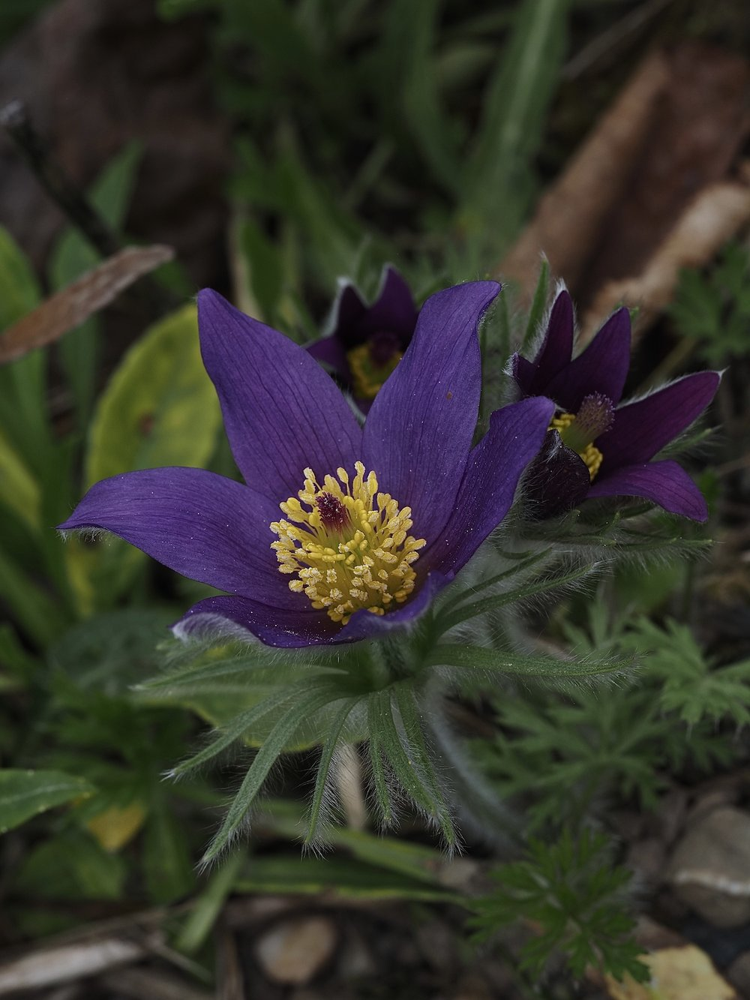

Küchenschelle


Streng geschützt – und zu Recht
Die Küchenschelle gehört zu den streng geschützten Wildpflanzen Deutschlands. Ihr Lebensraum – magere, sonnige Kalkrasen – ist durch Aufforstung, Verbuschung und Düngung auf einen Bruchteil geschrumpft. Wer heute einen Bestand findet, blickt auf ein Stück Naturgeschichte. Die violetten Glocken inmitten des Seidenhaarkleides der jungen Blätter sind eines der eindrucksvollsten Bilder des frühen Frühjahrs.
Seidenhaare gegen den Frost
Die auffällige Behaarung der Küchenschelle ist kein Zierrat, sondern Kälteschutz: Die feinen Seidenhaare auf Blättern, Stängeln und sogar auf der Blütenaussenseite fangen Wärme und schützen das junge Gewebe vor Spätfrösten. Im Frühjahr, wenn die Temperaturen noch schwanken, ist dieser natürliche Wärmepelz ein entscheidender Überlebensvorteil.